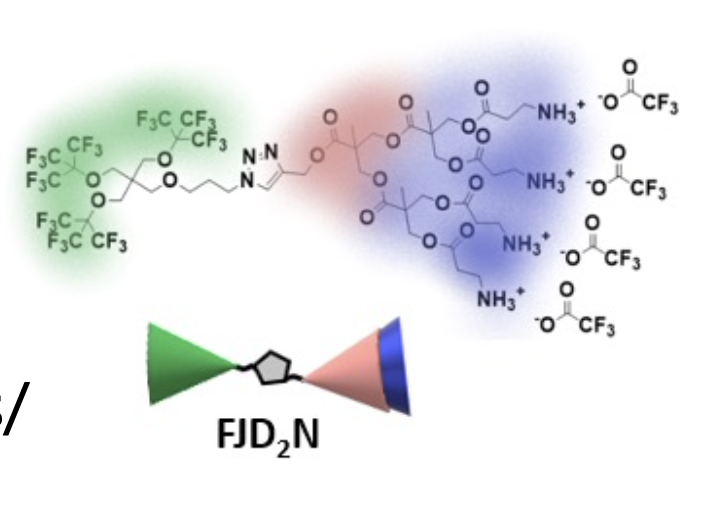

Home
Tutorial: My tutorial
Contributors: Andreas Haahr Larsen.

Insert an illustration that also goes here and to the front page. Square format. Please ensure that there are no copyright issues. This caption in italic.
Before you start
- Download and install SasView.
- We recommend that you do the Spheres tutorial.
Learning outcomes
SLDs Dendron- Use NIST SLD calculator.
- Simultaneous fitting of mutliple contrasts in SasView
Introductory remarks
something about the sample (dendron), something about SANS contrast variation.
Part I: calculate SLD of dendron
go to the NIST SLD calculator and calculate total SLD for dendron using the chemical formula C50H66F27N7O18. provide the answer, maybe a hint.
Part II: analyse data (Simultaneous fitting)
walk-through analysis of the example SANS data in sasview.
Challenges
- Challenge 1: calculate SLD of this other moleculer with this chemical formula.
- Challenge 2: Analyse this SANS data.
Feedback
Help us improve the tutorials by- Reporting issues and bugs via our GitHub page. This could be typos, dead links etc., but also insufficient information or unclear instructions.
- Suggesting new tutorials/additions/improvements in the SAStutorials forum.
- Posting or answering questions in the SAStutorials forum.